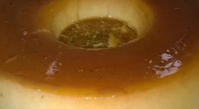
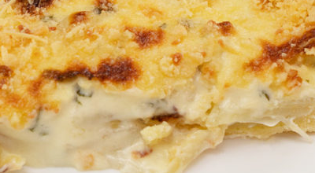

Receitas
Página Inicial
Frutas
Legumes
Receitas
Pudim de Banana d'água

Ingredientes:
3 ovos
1 lata de leite moça
1 colher de canela em pó
3 bananas
Leite
E açúcar
Modo de Preparo:
Bater bem as claras até ficarem em neve
Depois bater tudo no liquidificador: claras, gemas, bananas, leite e a mesma medida da lata de leite, canela
Faça a calda com duas xícaras de açúcar e uma de água
Depois de esfriar, coloque na forma e depois o pudim
Leve para o forno
Torta Cremosa de Cebola

Ingredientes:
Massa
1 e 1/2 xíc. de farinha de trigo
100g de manteiga gelada
1 c. de chá de sal
Recheio
fio de azeite
3 cebolas grandes
sal
pimenta-do-reino
1 cx de creme de leite
1/2 copo de creme de ricota ou requeijão
100g de muçarela ralada
cheiro verde
parmesão ralado
Modo de Preparo:
Massa
Misture todos os ingredientes com as mãos.
Se necessário, adicione um pingo de água para dar liga.
Coloque a massa em uma forma de fundo removível e pressione com as mãos no fundo e nas laterais.
Recheio
Em uma panela, coloque o fio de azeite e refogue as cebolas até ficarem translúcidas.
Tempere com sal e pimenta-do-reino.
Acrescente o creme de leite, creme de ricota, muçarela e cheiro verde.
Coloque o recheio sobre a massa, polvilhe parmesão e leve ao forno preaquecido a 180ºC por 25 minutos ou até dourar.
Enviar